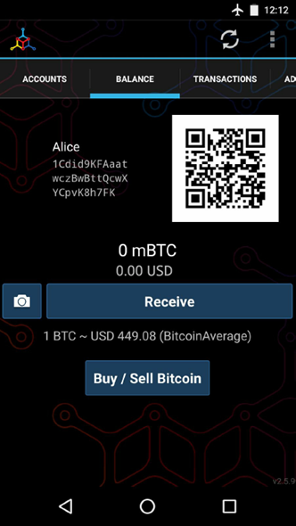

How BitCoin Works?
-
How BitCoin Works?

the bitcoin system consists of
* users with wallets containing keys * transactions that are propagated across the network * and miners who produce (through competitive computation) the consensus blockchain, which is the authoritative ledger of all transactions.
While tracking a transaction through the bitcoin network to the blockchain, we will use a blockchain explorer site to visualize each step. A blockchain explorer is a web application that operates as a bitcoin search engine, in that it allows you to search for addresses, transactions, and blocks and see the relationships and flows between them.
Popular blockchain explorers include:
* Bitcoin Block Explorer * BlockCypher Explorer * blockchain.info * BitPay Insight Each of these has a search function that can take a bitcoin address, transaction hash, block number, or block hash and retrieve corresponding information from the bitcoin network.T
Alice Buys a Coffee
* Alice buys a coffee from Bob's Cafe
* The POS machine generates a QR code containing the payment request * The QR code is a bitcoin url:
bitcoin:1GdK9UzpHBzqzX2A9JFP3Di4weBwqgmoQA?amount=0.015&label=Bob%27s%20Cafe&message=Purchase%20at%20Bob%27s%20Cafe
* The URL contains several key information:
A bitcoin address: "1GdK9UzpHBzqzX2A9JFP3Di4weBwqgmoQA"
* The QR code is a bitcoin url:
bitcoin:1GdK9UzpHBzqzX2A9JFP3Di4weBwqgmoQA?amount=0.015&label=Bob%27s%20Cafe&message=Purchase%20at%20Bob%27s%20Cafe
* The URL contains several key information:
A bitcoin address: "1GdK9UzpHBzqzX2A9JFP3Di4weBwqgmoQA"
The payment amount: "0.015"
A label for the recipient address: "Bob's Cafe"
A description for the payment: "Purchase at Bob's Cafe"
* Alice's wallet issue a transaction to Bob's Cafe on the blockchain. Alice's Transaction

A
-
Bitcoin Transactions
Transaction = Owner A authorize value transfer to Owner B
The Transaction contains the following information:
* Transaction Inputs
* Transaction Outputs
* Miner Collected Transaction Fee
* Proof of Owner (signing)

Satoshi
-
Transaction Chains
* Alice's Transaction A: Alice receives bitcoin from Joe
* Alice's Transaction B: Bob's Cafe receives bitcoin from Alice
Transaction B references A as an input and creates new outputs. The transactions form a chain:
Categorization
-
Typical Transaction Types
Common Transactions
* Simple Payment from one address to another address
* Sometimes a change is made to previous transaction's output

Aggregated Transactions
Aggregate several inputs into a single input. This is equivalent to the real world situation which you use lots of coins to form a bigger note.
Distributed Transactions
Distributes one input to multiple outputs representing multiple recipients. Just like processing a payroll.
S
-
Construct Transactions
Usually a user's wallet keeps track of the outputs that can be used as inputs in future transactions.
Full node client stores a copy of all the un-spent outputs from every transaction in the blockchain. While lightweight client stores only the un-spent outputs related to the current user. Sometimes the wallet doesn't maintain the unspents transactions. It will query bitcoin network to retrieve this info.CoinCap A service listing the market capitalization and exchange rates of hundreds of crypto-currencies, including bitcoin.
Chicago Mercantile Exchange Bitcoin Reference Rate A reference rate that can be used for institutional and contractual reference, provided as part of investment data feeds by the CME.
S
C
-
Sending and Receiving Bitcoin

Joe scanned Alice's QR Code and initiate the transferThe wallet will:
* construct a transaction assigning 0.1 BTC to Alice's address * sourcing the funds from Joe¡¯s wallet and signing the transaction with Joe¡¯s private keys. This tells the bitcoin network that Joe has authorized a transfer of value to Alice¡¯s new address. * The transaction is transmitted via the peer-to-peer protocol, it quickly propagates across the bitcoin network. In less than a second, most of the well- connected nodes in the network receive the transaction and see Alice¡¯s address for the first time. * Meanwhile, Alice¡¯s wallet is constantly ¡°listening¡± to published transactions on the bitcoin network, looking for any that match the addresses in her wallets. * A few seconds after Joe¡¯s wallet transmits the transaction, Alice¡¯s wallet will indicate that it is receiving 0.10 BTC.At first, Alice¡¯s address will show the transaction from Joe as ¡°Unconfirmed.¡± This means that the transaction has been propagated to the network but has not yet been recorded in the bitcoin transaction ledger, known as the blockchain. To be confirmed, a transaction must be included in a block and added to the blockchain, which happens every 10 minutes, on average. In traditional financial terms this is known as clearing.
C
-
Get Start

Android Bitcoin Wallet MyceliumB
T
S
C